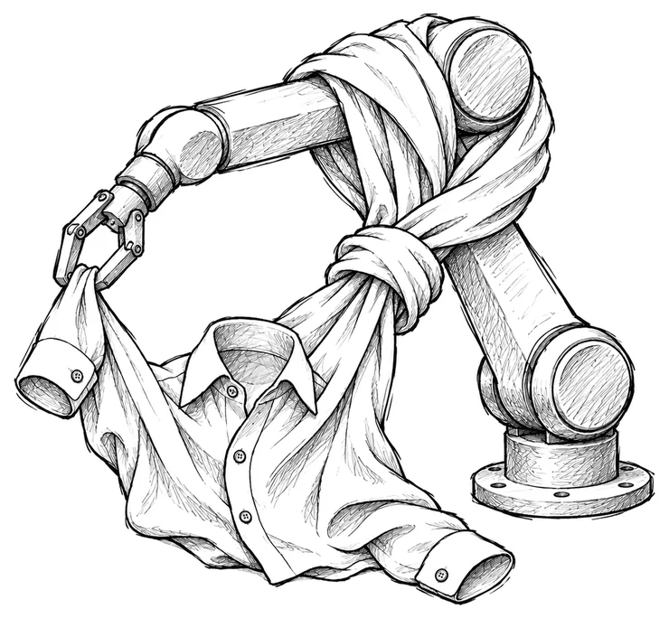
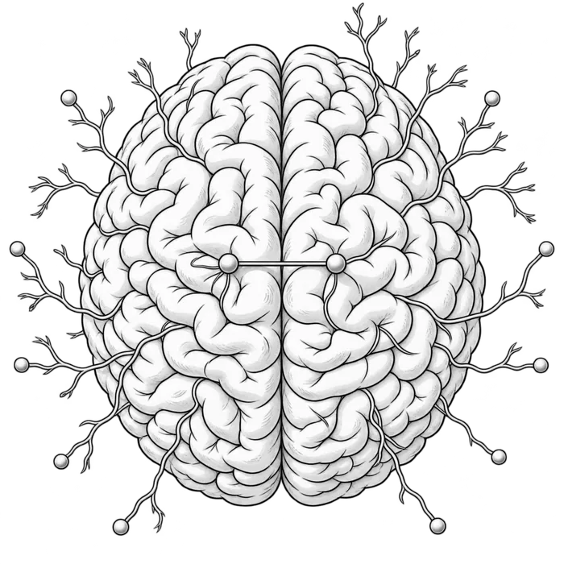
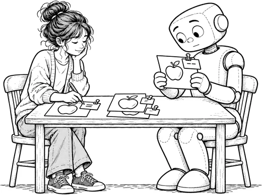
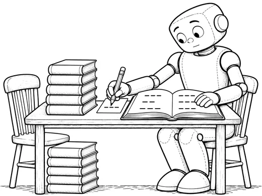
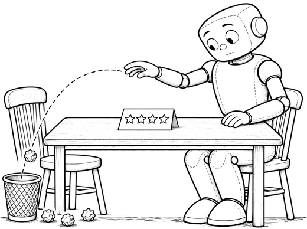
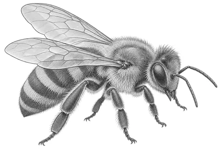
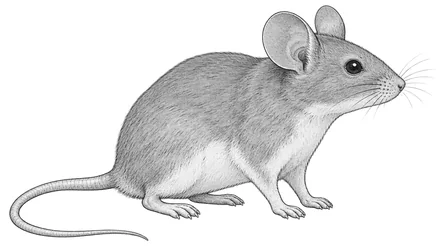
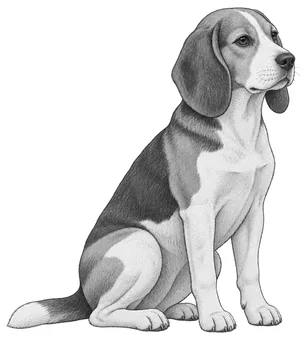
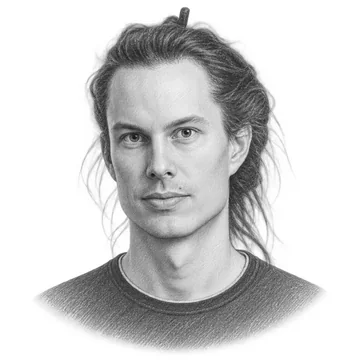
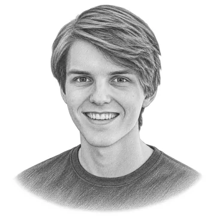

Folding a Protein, Folding a Shirt
Most people first come across deep learning through a chatbot. The network inside a chatbot is called a language model, and it predicts text. The networks above predict other things. Each one is real, and each was built for a real job.
This site has other essays about chatbots.

Chapter I
How every deep learning network works
Every deep learning network has the same five parts. The picture shows them in order.
The five parts
- Training data. A network learns from examples. Each example has an input and a correct answer. The examples can be sound clips, photographs, weather records or many other things.
- The deep learning network. This is the piece in the middle. It is made of numbers called parameters, and the parameters are arranged in layers. The input goes into the first layer, and each layer passes its result to the next. The network is called deep because it has many layers. The way the layers are connected is called the architecture. The number of parameters is the size.
- The prediction. The last layer gives the prediction. Before training the parameters are random, so the first predictions are wrong.
- The loss. The loss is one number. It shows how far the prediction was from the correct answer. A bad prediction gives a high loss.
- The update. After each prediction, every parameter changes a little, so the loss gets smaller. This repeats millions of times, and that is training.
After training, the parameters stay fixed. The network is given a new input, and it gives a prediction.
Networks differ in three ways: how they are trained, how big they are, and how their layers are connected.
Three ways to train a deep learning network
Training needs a way to score each prediction. There are three ways to do that.

Supervised learning. The correct answer comes with the example. A person wrote it down, or a record held it. A photograph of an eye comes with a doctor’s grade. A weather record comes with the weather six hours later.

Self-supervised learning. The correct answer is made from the example itself. The makers hide or change part of the example, and the network has to predict that part. A sentence can have its last word hidden, and the hidden word is the correct answer.

Reinforcement learning. The network is never shown a correct answer. It tries something, and it gets a reward when the result is good. A network that plays a game gets its reward for winning.
A network can also be trained in more than one of these ways. A language model starts with self-supervised learning. It predicts the next word in a very large amount of text. Later it is trained on conversations that people wrote as good examples, and that step is supervised learning. After that comes reinforcement learning. The language model writes answers, and they can be scored in three ways. A Talking Machine of Your Own shows all three.
Four sizes of deep learning network
The size of a network is its number of parameters. The networks below come in four sizes. The figure shows each size beside an animal.

Under 1 million parameters
A honeybee has just under 1 million neurons.

1 million to 100 million
A mouse has about 70 million neurons.

100 million to 10 billion
A dog has about 2 billion neurons.
Over 10 billion
A person has about 86 billion neurons.
Chapter II
The dozen networks
A dozen networks follow, from a song detector on a phone to an arm that folds shirts. Each one comes with a plain account of what it does, what it learned from and how it is built.
Network 1
Recognise a song
Now Playing runs in the background on Google Pixel phones and shows the name of music playing nearby
The job
Google Pixel phones have a feature called Now Playing. It runs in the background all day. When music plays nearby, in a cafe or a shop, the name of the song appears on the lock screen. The owner does not have to open an app, and the phone needs no internet connection.
Two networks share the work. A small one runs all day and checks for music. When it finds music, it wakes a bigger network. Once a second, the bigger network turns the last few seconds of sound into 96 numbers, called a fingerprint. The phone compares the fingerprint with a list of songs stored on the phone, and the closest match gives the name.
The small network is called the detector, and the bigger one is the song matcher. The training rows on the card describe the detector.
Training data
Google trained the detector on short clips of sound. Each clip carried a label, music or not music. The clip is the input, and the label is the correct answer. This is supervised learning.
Prediction and loss
For each clip, the detector predicts music or not music. The loss is low when the prediction matches the label. The loss is high when the prediction is wrong.
A detector can make two kinds of mistake. It can miss a song, or it can raise a false alarm. A false alarm wakes the bigger network and wastes battery. Google set the detector to raise about one false alarm every twenty minutes. At that setting it catches about three quarters of the music.
Inside the network
The architecture is a convolutional network. Small filters slide along the sound, and each filter checks for one pattern. That suits music. A tune sounds the same wherever it falls in a clip.
The detector has 8 layers and about 8,000 parameters. That is small. The whole detector takes less storage than a few pages of plain text.
In use
Google put Now Playing on the Pixel 2 in 2017, and Pixel phones still have it. The detector runs on a low-power chip inside the phone. Google measured the whole feature on a Pixel 2, and it used about 1 percent of the battery in a day.
Where the architecture came from
Convolutional networks go back to the late 1980s. Yann LeCun built one at Bell Labs to read handwritten numbers. By 1996, banks in the United States were using a version of it to read cheques.
Network 2
Rank the posts in a feed
The For You feed on X, which used to be Twitter, uses a huge network to put posts in order
The job
X is the social network that used to be called Twitter. Its main page is a feed of posts called For You. Hundreds of millions of posts could appear there. A network gives each post a score, and the post with the highest score goes first.
X publishes the code for this network. Most companies keep their feed networks secret.
Training data
The training data is a record of what people did with posts. Each example is one person and one post. The correct answer is what that person did with the post. They may have liked it, replied to it, reposted it or reported it. The record holds the correct answer, so this is supervised learning.
Prediction and loss
The network takes 64 posts at a time. For each post it predicts the chance of each action. One number is the chance of a like, another is the chance of a reply, and so on. The loss is low when the predicted chances match what people did.
A list of weights then turns those chances into one score. Twitter published the list it used in 2023. A reply that the author answered counted plus 75. A report counted minus 369. So the feed was built to lift posts that start conversations and to push down posts that people report.
Inside the network
This network has two parts.
The first part is a set of embedding tables. A table is a long list of rows, and every row holds 1,024 parameters. One table serves users, one serves posts and one serves authors. The network matches each user, post or author to two rows and looks them up. The user table and the post table have 100 million rows each, and the author table has 30 million.
The second part is a transformer with 8 layers. A transformer weighs every part of its input against every other part. Here it weighs each post against the person’s past activity. How Attention Works in a Transformer shows this weighing step by step inside GPT-2, a small language model. There each word is weighed against the words before it.
Almost all of the parameters are in the tables. The network is huge, with hundreds of billions of parameters.
In use
In 2023 Twitter said the feed ran about 5 billion times a day. Each run took under 1.5 seconds on average. The ranking network of 2023 was an older design with about 48 million parameters. X still updates the published code. On 19 October 2026 Elon Musk, the owner of X, announced a new ranking network. He wrote that it predicts the time spent on a post much better.
Where the architectures came from

Embedding tables came from work on language. Tomas Mikolov built a table with one row for each word. By his own account, he tried king minus man plus woman, and the result was queen. The papers came out in 2013.
The transformer came from Google in 2017. Eight researchers built it to translate between languages.
 Who Killed Aldous Finch? tells the idea behind the transformer, called attention, as a murder mystery at a country house.
Who Killed Aldous Finch? tells the idea behind the transformer, called attention, as a murder mystery at a country house.
Network 3
Cool a data centre
A small network helps Google keep its computer buildings cool
The job
A data centre is a building full of computers. The computers give off a lot of heat. Chillers, pumps and cooling towers carry the heat away, and they use a lot of electricity. The cheapest way to run them changes with the weather and with how busy the computers are. Google built a network to predict how efficiently the building runs.
Training data
Google recorded readings from the cooling plant every five minutes for about two years. That gave 184,435 examples. Each example holds 19 readings, such as the outside temperature and a pump reading. The correct answer is how efficiently the building ran at that moment. This is supervised learning.
This efficiency is a ratio. It compares the power the whole building uses with the power the computers use.
Prediction and loss
The network predicts that ratio from the 19 readings. The loss is the gap between the prediction and the real ratio, squared. After training, the predictions were off by about 0.4 percent.
Inside the network
The architecture is a multilayer perceptron. It has 5 layers, and each layer is fully connected to the next. That suits this job, because the 19 readings have no order. Any reading can matter together with any other. The network is small, with about 11,000 parameters.
In use
Operators could try a new setting on the network before anything moved in the plant.
In 2016 DeepMind joined the work. Its networks predicted the efficiency for the coming hour, and other networks predicted temperature and pressure for the same hour. Google reported that this system cut the energy used for cooling by up to 40 percent. In 2018 Google let a newer system control the cooling directly. It saved about 30 percent on average, and an operator can take back control at any time. These figures are Google’s own.
Where the architecture came from
The multilayer perceptron is the oldest of the six architectures. Frank Rosenblatt described its first form, the perceptron, in 1958, and ran it as a program on a computer. By 1960 his laboratory had built it as a machine with 400 light sensors. The machine learned to tell letters apart, such as E and X. In 1988 a small network of this kind steered a van down a path at Carnegie Mellon University.
Network 4
Check eyes for disease
A Google network checks eye photographs in clinics that have no eye doctor
The job
Diabetes can damage the small blood vessels at the back of the eye. If the damage is not caught, the person can go blind. An eye doctor can spot it in a photograph, but many clinics have no eye doctor. This network checks the photograph. It predicts whether the patient needs to see a specialist.
Training data
Google collected 128,175 photographs of the back of the eye. A panel of 54 eye doctors graded them in 2015. Each photograph was graded by three to seven doctors. The photograph is the input. The grade that most of the doctors gave is the correct answer. This is supervised learning.
Prediction and loss
The network predicts a grade for each photograph, and a high grade sends the patient to a specialist. The loss is the gap between its grade and the doctors’ grade.
Google then set how cautious the network should be. A missed case can cost a person their sight. A false alarm costs one extra clinic visit. So the network is set to send on more patients, and some of them turn out to be fine.
Inside the network
The architecture is a convolutional network, like the one that recognises songs. This one is much bigger. It also uses filters of several sizes in each layer, so it can catch small patterns and large ones together. It is called Inception-v3. It is medium in size, with about 22 million parameters.
In use
Thailand tested a later version of the system in its national screening programme, at nine clinics. The system checked the photographs of 7,651 people, and the answers came back right away. It caught 91 percent of the serious cases. Eye specialists who looked at the same photographs caught 85 percent.
Network 5
Make a picture from text
Stable Diffusion turns a line of text into a picture
The job
A person types a few words that describe a picture. These words are called the prompt. The network makes a picture to match. Stable Diffusion is one network that does this. Its makers published the parameters and the code, so anyone can study it.
Training data
The training data is a very large set of pictures from the web, each with a caption. For each example, the makers took a real picture and added random noise to it. Noise is a random speckle spread over the picture. Sometimes they added a little noise. Sometimes they added so much that the picture disappeared.
The noisy picture and its caption are the input. The noise that was added is the correct answer. The makers made that answer themselves, so this is self-supervised learning.
Prediction and loss
The network predicts the noise in the picture. The makers know exactly what noise they added, so the prediction can be checked. The loss is the gap between the predicted noise and the real noise, squared.
This way of training is called diffusion.
Inside the network
The architecture is a U-Net. A U-Net squeezes the picture down to a small summary, and then expands the summary back to full size. After the squeeze, the network can take in the whole picture at once. Shortcuts carry the fine detail across, so the detail survives the squeeze.
A separate text network turns the prompt into numbers and passes them to the U-Net. The U-Net is large, with 860 million parameters.
In use
To make a new picture, the network starts with pure noise. It predicts the noise and removes a little of it. It does this 50 times. Each step leaves the picture a little clearer, and the prompt steers every step. After the last step, a finished picture is left.
Where the architecture came from
The U-Net was first built for biology. In 2015 Olaf Ronneberger and two colleagues in Freiburg wanted to outline single cells in microscope pictures. They drew their network in the shape of a letter U. Seven years later, Stability AI released Stable Diffusion with a U-Net inside.
Diffusion was first described in 2015. In 2020 three researchers at Berkeley made it work well for pictures.
Network 6
Forecast the weather
GraphCast, from Google DeepMind, forecasts the weather for the whole planet
The job
Weather forecasts usually come from physics. Large computers work through equations for the air and the oceans. GraphCast makes a forecast in a different way. It learned from records of past weather, and it can make a ten-day forecast in under a minute.
Training data
The training data comes from an archive called ERA5. DeepMind used its records of the weather across the whole planet from 1979 to 2017. One example is the weather at two times, six hours apart. The correct answer is the weather six hours after that. This is supervised learning.
Prediction and loss
The network predicts the weather six hours ahead. The loss is the gap between the prediction and the real weather, squared. To forecast further, the network takes its own prediction as the next input. Forty steps give ten days.
Squared error has a side effect. When a storm could go one of two ways, the network predicts something in between. That blurs sharp features. NOAA is the weather agency of the United States. When NOAA launched its version in December 2025, it reported one weakness. The network was worse than the physics forecast at predicting the strength of a hurricane.
Inside the network
The architecture is a graph neural network. It covers the globe with a mesh of 40,962 points, and each point is joined to its neighbours. Most links are short. A few are long enough to cross an ocean. In each layer, every point passes a message to the points it is joined to. There are 16 layers, so a change at one point can reach points far away.
The network is medium in size, with 36.7 million parameters. One snapshot of the planet’s weather holds about 236 million numbers, so the network is smaller than its own input.
In use
The European weather centre, ECMWF, started using a network forecast of its own in February 2025. It added a second one on 1 July 2025. NOAA started using a forecast built on GraphCast’s design on 17 December 2025. Both centres still use physics to prepare the starting weather.
Where the architecture came from
Molecules were among the first uses of graph neural networks. A set of points joined by links is called a graph. A molecule is one, with atoms for points and bonds for links. In 2020 a network of this kind checked about 6,000 molecules. It flagged one that kills bacteria resistant to other drugs, and the researchers named it halicin. The same network then checked more than 100 million molecules in three days.
Network 7
Decipher a burnt scroll
The scroll is burnt and cannot be opened. A network from the Vesuvius Challenge found the ink inside it
The job
A burnt scroll sits in a case. It looks like a lump of charcoal.
The scroll comes from Herculaneum, a Roman town near Mount Vesuvius. The volcano erupted in 79 AD, and the heat turned the scroll black and brittle. It cannot be unrolled, because the layers would crumble.
Scientists can scan the scroll with X-rays. The scan shows every layer inside, but the writing does not show up. The ink is made of carbon, and the burnt page is carbon too. In an X-ray, the ink and the page look the same. The job of this network is to find the ink.
Training data
A contest called the Vesuvius Challenge offered prize money for reading the scroll. People in the contest studied the scans closely. They found a faint cracked pattern on the pages. The pattern followed the shapes of letters, so it marked where the ink was.
A network could learn to find that pattern. First it needed examples with the correct answers. The examples came from broken pieces of other scrolls.
A broken piece has some of its writing out in the open. In infrared light, a camera can photograph that ink clearly. The same piece can also be scanned with X-rays. That gives two pictures of one piece. The X-ray scan is the input, and the photograph is the correct answer. This is supervised learning.
That was the first round. The network then found faint letter shapes inside the rolled scroll. The team marked those shapes and trained the network on them, and they repeated this for several rounds. The winning network learned from these maps of the scroll itself.
Prediction and loss
The network is given the X-ray scan of a piece. It predicts a map of where the ink is. The loss is the gap between that map and the correct answer.
Inside the network
The architecture is a transformer, like the one in Rank the posts in a feed. A transformer weighs every part of its input against every other part. Here the input is one small block of the scan. The parts are spots in the block, across the page and through its depth. That helps the network find a thin trace of ink.
The network is medium in size, with 38 million parameters.
In use

Youssef Nader took a network trained on broken pieces. He adapted it to work on a whole rolled scroll. On 5 February 2024, Nader, Luke Farritor and Julian Schilliger won the grand prize of $700,000. Their entry found more than 2,000 letters inside one scroll. That text had not been read since 79 AD.
A network can also mark ink where no ink exists. To guard against that, the winners used three different architectures. They compared the three results to catch false letters.
In June 2026, researchers with the Vesuvius Challenge announced the first complete reading of a sealed scroll. Its text appears to be a work on ethics from the Stoic school of ancient Greek philosophy.
Network 8
Predict how a protein folds
AlphaFold 2, from DeepMind, predicts the shape of a protein from its chain of amino acids
The job
Proteins do most of the work inside a living cell. Each protein is a chain of small parts called amino acids. The chain folds up into a shape, and the shape sets what the protein can do.
Finding the shape in a laboratory can take years. Scientists grow crystals of the protein and fire X-rays at them. AlphaFold 2 predicts the shape from the chain alone.
Training data
The training data is the Protein Data Bank. It holds the protein shapes that scientists have worked out in laboratories. Each example is one protein. The input is its chain, written as a sequence of letters. The correct answer is the position of every atom. This is supervised learning.
That was too little data. So DeepMind used a trained network to predict the shapes of about 350,000 more proteins. It kept the predictions the network was most confident about, and added them to the training data. In the final round of training, three quarters of the examples were predictions like these.
Prediction and loss
The network predicts where every atom sits. The loss is how far the predicted atoms are from their real positions. The network also predicts how confident it is in each part of the shape.
Inside the network
The architecture is a transformer. It works with two tables. One table compares the protein with similar proteins from other species. The other table holds every pair of amino acids in the chain.
Forty-eight blocks of layers pass information between the two tables. Eight more layers then place the atoms. The whole network runs four times, and each run starts from the result of the last. DeepMind published the parameters as a file, and its paper gives no count.
In use
DeepMind entered AlphaFold 2 in a contest in 2020 and published it in 2021. The network then predicted more than 200 million protein shapes, and DeepMind put them in a free database. By November 2025, over 3 million researchers had used the database, by DeepMind’s count.
A Talking Machine of Your Own has more on AlphaFold, with a figure of a chain before and after it folds.
Demis Hassabis and John Jumper led the work at DeepMind. In 2024 they shared one half of the Nobel Prize in Chemistry for it. The other half went to David Baker, who designs new proteins.
Network 9
Shrink video
MuZero-RC, from DeepMind, was built to help YouTube send video with less data
The job
A video is a long row of pictures called frames. Before YouTube sends a video, a program called an encoder shrinks it. The encoder needs a setting for each frame. The setting controls how hard that frame is squeezed. More squeezing gives less data and a worse picture. MuZero-RC gives the setting for each frame.
Training data
This network has no correct answers to learn from, because the best setting for a frame is not known. So one of the five parts changes. A reward takes the place of the loss.
The training data is 20,000 short videos. The network tries a full set of settings on a video, and the result gets two checks. The first check is whether the video stayed within its data limit. The second check is how good the picture looks.
Prediction and reward
The result is compared with the network’s own recent results on the same video. A better result counts as a win, and a worse one counts as a loss. That win or loss is the reward. Each update changes the parameters so that wins become more likely. This way of training is called reinforcement learning.
During training, the network also planned ahead. It held a learned copy of how the encoder behaves. It used that copy to try 200 possible futures before each setting. A learned copy like this is called a world model.
Inside the network
The network starts with a transformer of 4 blocks. These blocks use attention across the frames of the video. Four more blocks of layers follow. DeepMind never published the number of parameters.
In use
In 2022 YouTube used the network on some of the videos it sent to viewers. DeepMind reported that videos needed 4 percent less data on average. When the network is in use, the planning is switched off. Whether YouTube still uses it today has not been published.
Network 10
Describe photographs
DINOv3, from Meta, learned from photographs that have no labels
The job
Most networks for pictures learn from labelled photographs. Somebody has to write a label for every one, and that takes a lot of work. DINOv3 learned from photographs with no labels at all.
DINOv3 does one thing. It turns a photograph into a long list of numbers. The list works as a description of the photograph, written in numbers.
Two photographs of the same kind of thing get lists that are close together. A photograph of a beagle and a photograph of a poodle get similar lists. A photograph of a truck gets a very different one.
Other programs can then work from the list. A small program can learn a new job, such as finding trees in satellite pictures, from far fewer labelled examples. DINOv3 has already done the hard part of seeing. DINOv3 also gives one list for each small patch of the photograph, so a program can tell where in the picture a thing is.
Training data
Meta started with 17 billion public photographs and kept 1.7 billion of them. None of them were labelled. The correct answer has to come from the photographs themselves, so this is self-supervised learning.
Prediction and loss
Training uses two copies of the network, called the student and the teacher. The teacher is an average of the student’s own earlier versions.
Both copies get the same photograph. The student gets a small piece of it, and the teacher gets a bigger piece. Each copy turns its piece into a list of numbers. The loss is the gap between the two lists. The student gets a low loss when its numbers describe the whole photograph, even from a small piece.
This way of training is called self-distillation.
Inside the network
The architecture is a transformer with 40 blocks of layers. The photograph is cut into small square patches, and the transformer weighs every patch against every other patch. The network is large, with 6.7 billion parameters.
In use
Meta released DINOv3 in August 2025. Meta reports that the World Resources Institute uses it to watch forests in satellite pictures. A version trained on satellite pictures measured the height of trees in one region of Kenya. Its average error was 1.2 metres. The older version had an error of 4.1 metres. These figures are Meta’s own.
Network 11
Fold a shirt
pi0, from Physical Intelligence, turns camera pictures and a request into the moves that fold a shirt
The job
A crumpled shirt lies on a table in front of a robot. A person tells the robot to fold the shirt. The robot has cameras and an arm. The network takes the camera pictures and the request, and it gives the next 50 moves of the arm.
Folding cloth is hard for a robot. A shirt has no fixed shape, and it lands on the table differently every time.
Training data
The training data is recordings of people steering robots by hand. A person guides the robot through a task, such as folding a shirt. The recording holds what the cameras showed and how the arm moved. There are about 10,000 hours of these recordings.
The camera pictures and the request are the input. The person’s movements are the correct answer. Training this way is called imitation, and it is a kind of supervised learning.
Prediction and loss
The network predicts the next 50 moves of the arm. It builds the moves the way Stable Diffusion builds a picture. It starts from random noise and cleans it up in 10 steps. The loss is low when the cleaned-up moves match what the person did.
Inside the network
The architecture is a transformer with two parts. A big part takes in the pictures and the words. A smaller part writes the movement. The whole network is large, with 3.3 billion parameters.
In use
A company called Physical Intelligence released pi0 in 2024 and pi0.5 in 2025. It tested pi0.5 in three real homes that the network had never seen. The robot did better as the training data covered more homes.
Later versions kept folding. One folded laundry in a new home for over two hours without a stop, by the company’s own figures. In April 2026 the company tried a version called pi0.7 on a new kind of robot arm. The training data held no shirt folding by that kind of arm. The arm finished 80 percent of the shirts. People steering the same arm by hand finished about as many.
The robot still makes mistakes. An unfamiliar drawer handle can stop it, and sometimes the arm blocks its own camera.
Network 12
Make a quick decision
Jev, from TypeSafe, answers a question by giving a probability for each allowed answer. Networks of this kind are now called decision models
The job
Software makes many small decisions. An email arrives, and a program has to send it to the right team. A language model can decide, but it writes its answer one piece of a word at a time, and that is slow and costly.
Jev is a decision model. A program sends it a piece of text, a question and a list of allowed answers. Jev sends back numbers.
A program can ask three kinds of question:
- A pick from a list: which team should get this email?
- A rating: how urgent is it?
- A yes or no: is the customer asking for a refund?
The pick and the rating each come with a confidence. A high number marks a clear answer. Here the team is clear and the urgency is less clear. Software can act on the clear answers, and a person can check the rest.
A decision model is a good fit for a small decision that comes up thousands of times a day, where the possible answers are known ahead of time. When the answer has to be written out or explained, a language model is the better tool.
Training data
TypeSafe has not published its training data. Other groups have built open copies of Jev. They collected Jev’s answers to many questions and trained their own networks to give the same answers.
Prediction and reward
Jev predicts a probability for every allowed answer. TypeSafe trained it with reinforcement learning, so a reward takes the place of the loss. The company has not published the reward. Its stated aim is calibrated probabilities. When a calibrated network gives 80 percent, it is right about 80 times in 100.
Inside the network
TypeSafe has published almost nothing about the inside of Jev. An open copy, JEV-9B, is a language model with one small layer added at the end. The text and the question pass through once, and the small layer gives a number for each answer. A language model runs once for every piece of a word it writes. A decision model runs once for the whole decision, and that is why it is fast.
In use
TypeSafe launched Jev on 15 September 2026. An answer comes back in 70 to 500 milliseconds, by the company’s own measurement. OpenAI opened a service of the same kind, the Decisions API, on 7 October. On 10 November, Hugging Face made the decision model a standard type in its Transformers library.
An outside test showed two limits. Accuracy falls as the list of answers grows. With 128 answers on the list, Jev was right 60 percent of the time. The order of the answers matters too. With 64 answers, a new order changed Jev’s answer in about one case in seven.
Chapter III
Putting it all together
Every network above has the same five parts. The table sets the networks side by side. Each row gives what the network predicts, its architecture, how it was trained and its size.
Three things stand out in the table.
The first is where the size comes from. The feed network is huge because its tables hold 230 million rows. The cooling network is small because it takes in 19 readings.
The second is that one architecture can do very different jobs. The transformer appears in the feed network, the scroll reader, the protein network and the robot.
The third is where the correct answer came from. Most of the networks used supervised learning. Doctors wrote the correct answers for the eye photographs, and old weather records held them for the forecast. Stable Diffusion and DINOv3 used self-supervised learning. The makers of Stable Diffusion added the noise themselves, and DINOv3 compared two pieces of one photograph. MuZero-RC and Jev used reinforcement learning. They had no correct answer, so they learned from a reward.
A network can be described this way when its makers publish the details. Google and DeepMind published several of the networks here. TypeSafe has published little about Jev, so its card has gaps. Many other networks are in use, and their makers publish nothing about them.
Another idea is a network that learns from video with no labels. Meta released one, called V-JEPA 2, in June 2025. It predicts the hidden part of a video as a list of numbers. Early tests are modest. A robot arm that used it picked up a cup 65 percent of the time.
Chapter IV
Why protein folding was solved before shirt folding
The protein network and the shirt network were trained with the same five parts. The protein came first, by several years, and the training data explains the gap.
Scientists had spent fifty years working out protein shapes in laboratories. They had put the shapes in a public archive. When AlphaFold arrived, the answers were already written down.
For the shirt, no archive existed. People had to steer robots by hand for about 10,000 hours to make one, and the robot still fails on some shirts.

Researchers who build robots know this gap well. In Who Learns Faster, a Toddler or a Chatbot?, Jim Fan of Nvidia says it in one line: “We cannot download the motor control signals of the robots from the internet.”
The weather had almost forty years of records. The eye photographs had doctors who could grade them. The burnt scroll had a few broken pieces where the ink showed.
So to guess what deep learning will do next, ask one question about the job. Where are the answers already written down?
Appendix
A. The technical names
Some of the ideas above have more exact names.
The loss for a yes-or-no prediction is called binary cross entropy. The feed network uses it, and a yes-or-no detector is usually trained with it. The loss for predicting a number is called squared error. The cooling network, Stable Diffusion and GraphCast use it. The bigger network inside Now Playing uses a triplet loss. It pulls two recordings of one song together and pushes other songs apart. The loss for the robot arm is called flow matching.
The update has two steps with names of their own. Backpropagation works out how much each parameter added to the loss. Gradient descent then changes each parameter a little, so the loss gets smaller.
People often say model for a trained network. A diffusion model is a network trained to remove noise, like Stable Diffusion. A world model is a learned copy of how something behaves, like the one inside MuZero-RC. A language model is a network trained to predict the next word, or piece of a word, in a text. A decision model is a network that picks from a fixed set of answers, like Jev. TypeSafe’s own name for it is a System One model.
Training one network to give another network’s answers is called distillation.
Some products cannot be described this way. A company may sell a network’s predictions as a service and publish nothing about the training data, the loss or the architecture.
B. More on how artificial minds are built and trained
One well-known network has no card in this essay: the language model inside a chatbot. A Talking Machine of Your Own shows how one is trained and how to run one on a laptop.

The transformer appears in half of the dozen. How Attention Works in a Transformer shows every layer of GPT-2, a small language model, with real numbers taken from the network. Who Killed Aldous Finch? tells the same idea as a murder mystery, and at the end each clue is matched to a part of the transformer.
This essay ends with a question about training data. Who Learns Faster, a Toddler or a Chatbot? is about the training data of a language model. A child and a language model learn side by side, and the model read trillions of words before it could hold a conversation.
C. Sources
- Recognise a song. Agüera y Arcas and others, “Now Playing: Continuous low-power music recognition”, Google, 2017. arxiv.org Google Research, “Google’s Next Generation Music Recognition”, 2018. research.google
- Rank the posts in a feed. Twitter, “Twitter’s Recommendation Algorithm”, 2023. blog.x.com Twitter, the published description of the ranking network, 2023. github.com X, the published code for the For You feed, 2026. github.com X, the description of the transformer in that code. github.com Tesla North, on the new ranking network that Elon Musk announced, 19 October 2026. teslanorth.com AlternativeTo, a news report on the January 2026 release. alternativeto.net Naumov and others, “Deep Learning Recommendation Model for Personalization and Recommendation Systems”, 2019, on where the parameters sit. arxiv.org
- Cool a data centre. Jim Gao, “Machine Learning Applications for Data Center Optimization”, Google, 2014. static.googleusercontent.com DeepMind, “DeepMind AI reduces Google data centre cooling bill by 40%”, 2016. deepmind.google DeepMind, “Safety-first AI for autonomous data centre cooling and industrial control”, 2018. deepmind.google
- Check eyes for disease. Gulshan and others, “Development and Validation of a Deep Learning Algorithm for Detection of Diabetic Retinopathy in Retinal Fundus Photographs”, JAMA, 2016. static.googleusercontent.com Google Research, “Real-time diabetic retinopathy screening by deep learning in a multisite national screening programme”, the study in Thailand. research.google The same study, as indexed by DOAJ. doaj.org
- Make a picture from text. Rombach and others, “High-Resolution Image Synthesis with Latent Diffusion Models”, 2021. arxiv.org Stability AI, “Stable Diffusion Public Release”, 22 August 2022. stability.ai CompVis, the Stable Diffusion code and its description. raw.githubusercontent.com CompVis, the script that sets 50 steps. raw.githubusercontent.com The model card for Stable Diffusion 1.5. huggingface.co Ho, Jain and Abbeel, “Denoising Diffusion Probabilistic Models”, 2020. arxiv.org Sohl-Dickstein and others, “Deep Unsupervised Learning using Nonequilibrium Thermodynamics”, 2015. arxiv.org
- Forecast the weather. Lam and others, “GraphCast: Learning skillful medium-range global weather forecasting”, 2022. arxiv.org Google DeepMind, the GraphCast announcement, 14 November 2023. deepmind.google NOAA’s announcement of 17 December 2025, as reprinted by HPCwire. hpcwire.com NOAA, its page on AI weather models. epic.noaa.gov ECMWF, “ECMWF’s ensemble AI forecasts become operational”, 2025. ecmwf.int
- Decipher a burnt scroll. Vesuvius Challenge, the 2023 grand prize. scrollprize.org Vesuvius Challenge, the winning ink network. huggingface.co Vesuvius Challenge, on the first letters and the rounds of ink maps. scrollprize.org Nader, Farritor and Schilliger, the winning code and its description. github.com University of Kentucky, on the first full reading of a sealed scroll, 2026. ccs.uky.edu Archaeology Magazine, on the same reading, July 2026. archaeologymag.com
- Predict how a protein folds. The Nobel Foundation, the 2024 prize in chemistry. nobelprize.org Jumper and others, “Highly accurate protein structure prediction with AlphaFold”, Nature, 2021. nature.com The same paper, open copy. pmc.ncbi.nlm.nih.gov Google DeepMind, on 200 million predicted shapes, 28 July 2022. deepmind.google Google DeepMind, “AlphaFold: Five years of impact”, 25 November 2025. deepmind.google
- Shrink video. Mandhane and others, “MuZero with Self-competition for Rate Control in VP9 Video Compression”, 2022. arxiv.org DeepMind, “MuZero’s first step from research into the real world”, 11 February 2022. deepmind.google
- Describe photographs. Meta, the DINOv3 announcement, August 2025. ai.meta.com Meta, the DINOv3 paper, 2025. arxiv.org Meta, the DINOv2 paper, 2023. arxiv.org
- Fold a shirt. Physical Intelligence, “pi0: A Vision-Language-Action Flow Model for General Robot Control”, 2024. arxiv.org Physical Intelligence, the pi0.5 paper, 2025. arxiv.org Physical Intelligence, the report on a later version, November 2025. arxiv.org Physical Intelligence, the report on pi0.7, April 2026. arxiv.org
- Make a quick decision. TypeSafe, “Introducing System One models and Jev”, 15 September 2026. typesafe.ai A third-party guide to Jev and the Decisions API. huggingface.co The Decoder, on OpenAI’s Decisions API, 7 October 2026. the-decoder.com AutoTrust, the page for JEV-9B, with its design, training data and limits, 2026. huggingface.co An outside benchmark of Jev and six other networks, “Decision models under pressure”, September 2026. github.com Hugging Face, “Decision Models in Hugging Face”, 10 November 2026. huggingface.co
- Convolutional networks. Fukushima, “Neocognitron”, 1980. doi.org LeCun and others, “Backpropagation Applied to Handwritten Zip Code Recognition”, 1989. doi.org LeCun, Bottou, Bengio and Haffner, “Gradient-Based Learning Applied to Document Recognition”, 1998. doi.org Yann LeCun, his own account of the cheque reader. yann.lecun.com
- Multilayer perceptrons. Rosenblatt, “The Perceptron: A Probabilistic Model for Information Storage and Organization in the Brain”, 1958. doi.org Cornell Aeronautical Laboratory, the operators’ manual of the Mark I Perceptron, 1960. apps.dtic.mil Rosenblatt, “Principles of Neurodynamics”, 1961. papers.baulab.info Rumelhart, Hinton and Williams, “Learning representations by back-propagating errors”, Nature, 1986. doi.org Pomerleau, “ALVINN: An Autonomous Land Vehicle in a Neural Network”, 1988. proceedings.neurips.cc
- Embedding tables. Bengio and others, “A Neural Probabilistic Language Model”, 2003. jmlr.org Mikolov and others, “Efficient Estimation of Word Representations in Vector Space”, 2013. arxiv.org An interview with Tomas Mikolov on word2vec. ii.tudelft.nl Covington, Adams and Sargin, “Deep Neural Networks for YouTube Recommendations”, 2016. static.googleusercontent.com
- Transformers. Bahdanau, Cho and Bengio, “Neural Machine Translation by Jointly Learning to Align and Translate”, 2014. arxiv.org Vaswani and others, “Attention Is All You Need”, 2017. arxiv.org Google Research, the announcement of the transformer, 31 August 2017. research.google
- U-Nets. Ronneberger, Fischer and Brox, “U-Net: Convolutional Networks for Biomedical Image Segmentation”, 2015. arxiv.org The University of Freiburg page for the U-Net. lmb.informatik.uni-freiburg.de
- Graph neural networks. Scarselli and others, “The Graph Neural Network Model”, 2009. papers.baulab.info Gilmer and others, “Neural Message Passing for Quantum Chemistry”, 2017. arxiv.org MIT News, on the antibiotic halicin, 20 February 2020. news.mit.edu The halicin paper, MIT’s open copy. dspace.mit.edu
- Learning from video. Meta, the V-JEPA 2 announcement, 11 June 2025. ai.meta.com Meta, the V-JEPA 2 paper, 2025. arxiv.org
- Sizes and animal brains. Wikipedia, “List of animals by number of neurons”, read on 10 November 2026. en.wikipedia.org Will Douglas Heaven, “Geoffrey Hinton tells us why he’s now scared of the tech he helped build”, MIT Technology Review, 2 May 2023, on the 100 trillion connections in a brain. technologyreview.com